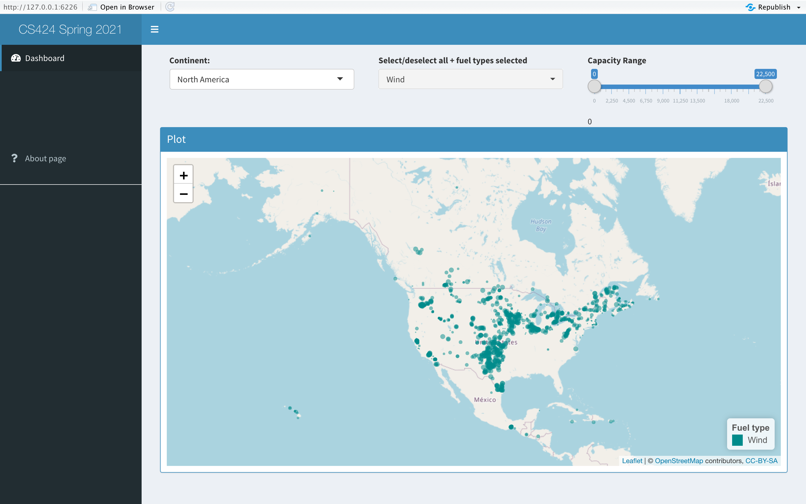
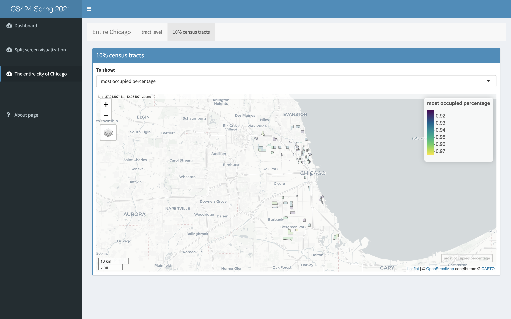
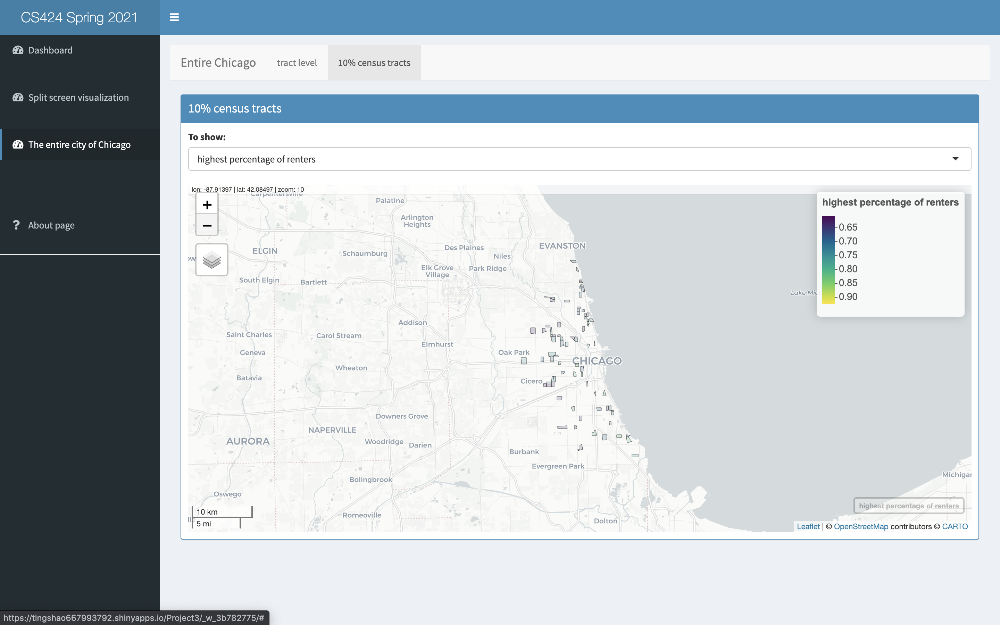

Project X

Introduction
This project use R to visualize data on global electrical power production in 2019, and use shiny to give people an interactive interface to create those visualizations. Different parts of the world tend to generate power in different ways and the application you create here should make it easy for people to see and explore those differences.
This app has only one dashboard and an about page.
How to run this applicationThe dashboard initially shows North America and all of the power plants there.
Each power plant is colored by its fuel type, and has the size of the power plant represent its capacity
The users are allowed to click on one of the power plants on the map and see additional data about that plant (country name, plant name, capacity, fuel type).
Input ControlThere are three inputs — one select input, one picker input, and one slider input.
Data
Source
The original data is available from kaggle.
and also available at Chicago Data Portal.
Content
Displays several units of energy consumption for households, businesses, and industries in the City of Chicago during 2010. Electric The data was aggregated from ComEd and Peoples Natural Gas by Accenture. Electrical and gas usage data comprises 88 percent of Chicago's buildings in 2010. The electricity data comprises 68 percent of overall electrical usage in the city while gas data comprises 81 percent of all gas consumption in Chicago for 2010.
Census blocks with less than 4 accounts is displayed at the Community Area without further geographic identifiers. This dataset also contains selected variables describing selected characteristics of the Census block population, physical housing, and occupancy.
In this project, I did not make changes to the data file before loading it into R.
Columns in this Dataset
Columns in this Dataset
There are 73 columns in the dataset, I am going to introduce a few that I use here.
| Column | Description |
|---|---|
| COMMUNITY AREA NAME | Community Name |
| CENSUS BLOCK | Census Block number obtained in the address matching/geocoding algorithms. Blank Census Blocks correspond to data that was aggregated to the Community Area due to privacy issues. |
| BUILDING TYPE | Building Type: Residential, Commercial, Industrial. Blank data corresponds to blank Census Blocks. |
| KWH JANUARY 2010 | Kilowatt hours (kWh) for January 2010 |
| KWH FEBRUARY 2010 | Kilowatt hours (kWh) for February 2010 |
| KWH MARCH 2010 | Kilowatt hours (kWh) for March 2010 |
| KWH APRIL 2010 | Kilowatt hours (kWh) for April 2010 |
| KWH MAY 2010 | Kilowatt hours (kWh) for May 2010 |
| KWH JUNE 201 | Kilowatt hours (kWh) for June 2010 |
| KWH JULY 2010 | Kilowatt hours (kWh) for July 2010 |
| KWH AUGUST 2010 | Kilowatt hours (kWh) for August 2010 |
| KWH SEPTEMBER 2010 | Kilowatt hours (kWh) for September 2010 |
| KWH OCTOBER 2010 | Kilowatt hours (kWh) for October 2010 |
| KWH NOVEMBER 2010 | Kilowatt hours (kWh) for November 2010 |
| KWH DECEMBER 2010 | Kilowatt hours (kWh) for December 2010 |
| TOTAL KWH | Total 2010 kWh from ComEd accounts. |
| THERM JANUARY 2010 | Therm consumption for January 2010. |
| THERM FEBRUARY 2010 | Therm consumption for February 2010. |
| THERM MARCH 2010 | Therm consumption for March 2010. |
| TERM APRIL 2010 | Therm consumption for April 2010. |
| THERM MAY 2010 | Therm consumption for May 2010. |
| THERM JUNE 2010 | Therm consumption for June 2010. |
| THERM JULY 2010 | Therm consumption for July 2010. |
| THERM AUGUST 2010 | Therm consumption for August 2010. |
| THERM SEPTEMBER 2010 | Therm consumption for September 2010. |
| THERM OCTOBER 2010 | Therm consumption for October 2010. |
| THERM NOVEMBER 2010 | Therm consumption for November 2010. |
| THERM DECEMBER 2010 | Therm consumption for December 2010. |
| TOTAL THERMS | Total 2010 Therms from Peoples accounts. |
| TOTAL POPULATION | Total population from Census 2010 report (QT-P6) Race alone or in combination and Hispanic or Latino 2010. |
| AVERAGE STORIES | Average number of stories based on data from Cook County Assessor's Office. |
| AVERAGE BUILDING AGE | Average Age of the buildings based on data from Cook County Assessor's Office. |
| OCCUPIED UNITS PERCENTAGE | |
| RENTER-OCCUPIED HOUSING PERCENTAGE | Percentage of occupied housing units that are renters from Census report (QT-H2) Tenure, Household Size and Age of Householder |
Interesting things I found
1 The location of wind power plants varies greatly in Asia and North America.
In Asia, wind power plants are usually in coastal areas.
This is because the main source of wind in Asia is the monsoon, which alternates with the seasons.
However, in North America, wind power plants are usually in inland areas.
 2 10% census tracts
Focus on 10% census tracts for the entire Chicago City, I found that:
The blocks in the city center have several characteristics:
Tracts with high occupied percentage of housing units and tracts with high percentage of occupied housing units that are renters are geographically dispersed.
They may not have much to do with the regionality.


Introduction video